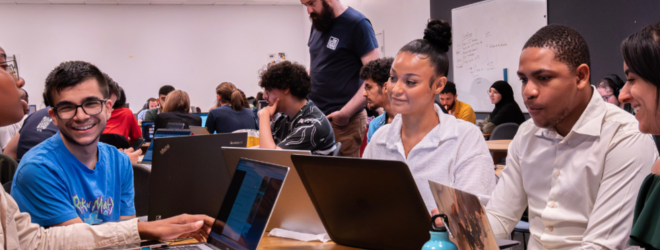

- Que vous soyez passionné par le développement web, la cybersécurité, l’intelligence artificielle ou encore le jeu vidéo, nos formations du Bac au Bac+5 vous ouvrent les portes des métiers de demain.
- Remplissez le formulaire et accédez immédiatement à l’ensemble de nos brochures pour tout savoir :
- _Développement Web
- _Développement Logiciel
- _Cybersécurité
- _Intelligence Artificielle & Data
- _Jeux Vidéos & Systèmes Immersifs
- _Data Protection

La Plateforme est une école du numérique et des nouvelles technologies co-fondée avec le Club Top 20 réunissant les grandes entreprises de la Métropole Aix-Marseille.
Des formations d’excellence accessibles au plus grand nombre, appuyées par une pédagogie axée projets et une priorité donnée à l’employabilité.
Rencontrez nous aux portes ouvertes !